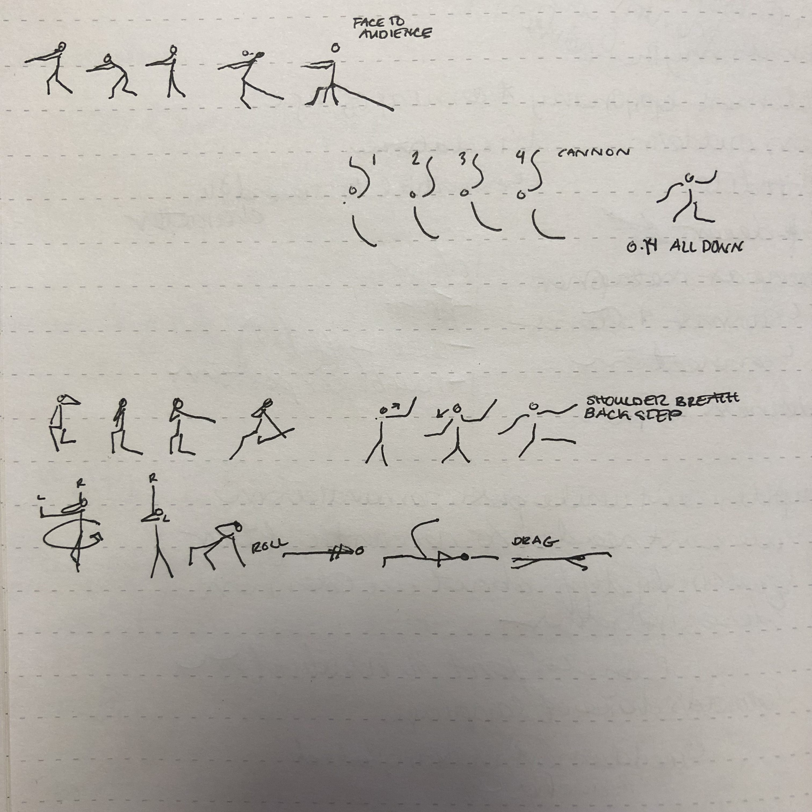
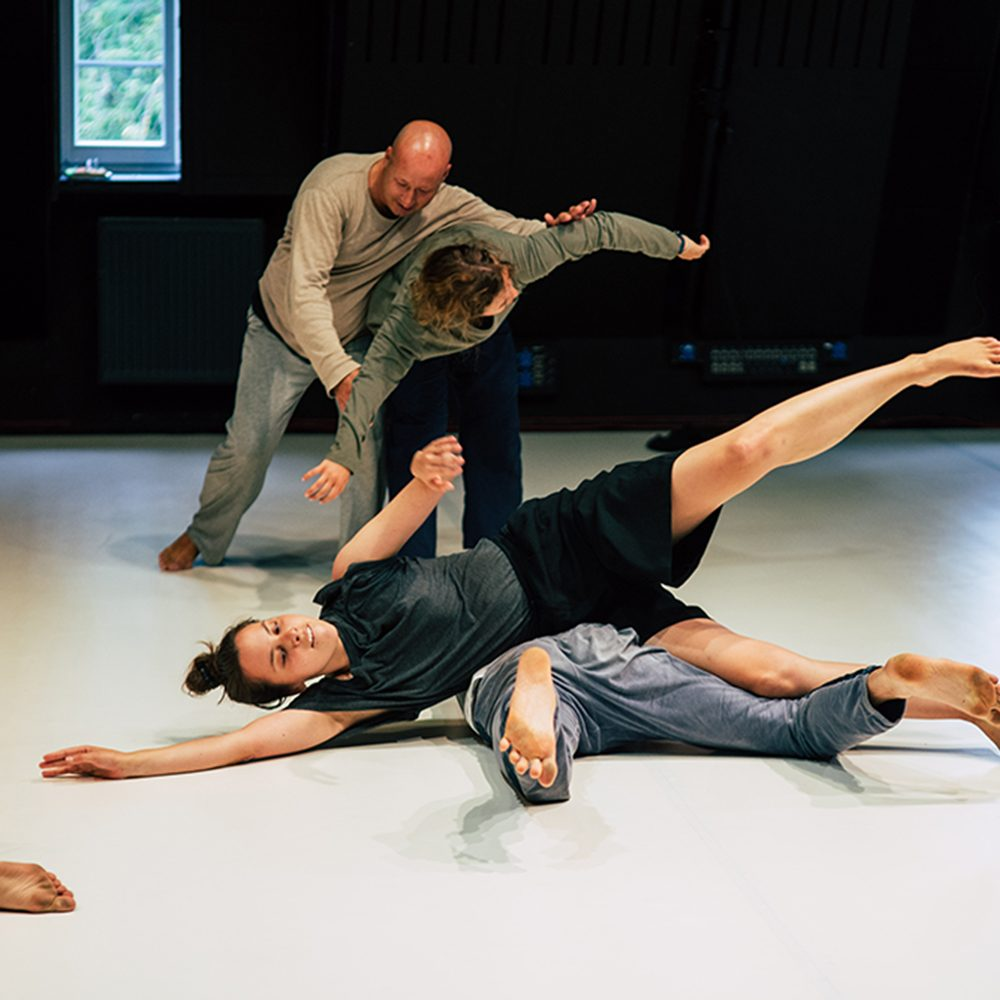
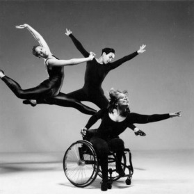
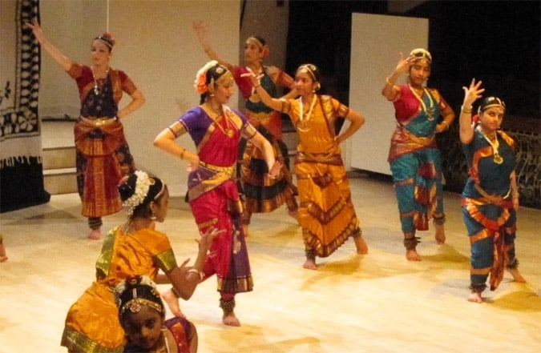
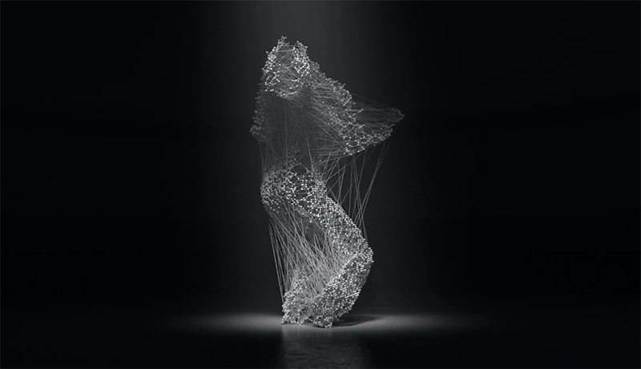
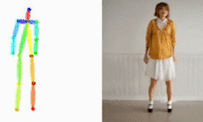
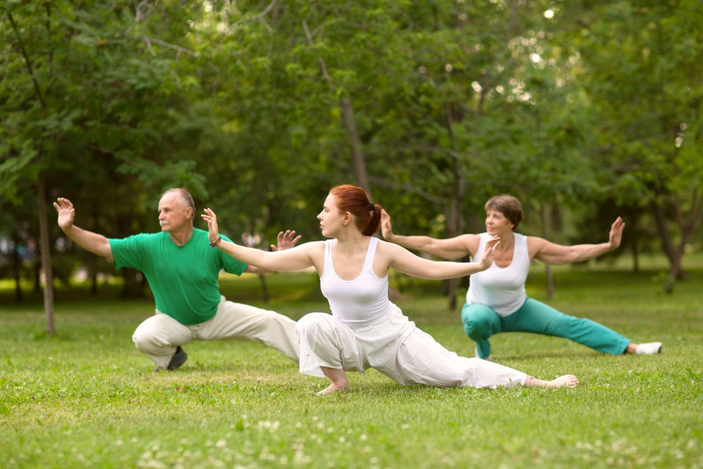
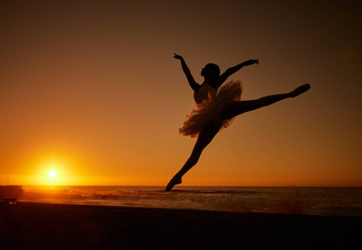

Dance in Motion:
Exploring Derivatives
Dance, as a word, holds endless possibilities. Beyond the act of physical movement, it branches into processes, transformations, and states of being.
-
The Process of Dancing
Dance is not just the final performance. The true magic lies in the process: the countless hours spent rehearsing, the improvisations that bring raw emotions, and the choreography that blends technique with creativity.
The process of dancing is a journey of self-discovery. Every step tells a story, every pause holds meaning, and every rhythm becomes a heartbeat shared with the world. -

Choreography
Choreography is the blueprint of dance,
where creativity meets structure○ Choreographers design movements that fit music, emotions, or stories, turning abstract ideas into a visual spectacle. This process requires a deep understanding of rhythm, space, and physical capabilities.
○ Think of iconic ballet performances like 'Swan Lake', where every pirouette and leap tells part of the story.
○ Choreographers often sketch sequences on paper before teaching them to dancers. -

Improvisation
Improvisation brings
spontaneity and individuality to dance○ Unlike structured choreography, improvisation allows dancers to create movements on the spot, influenced by mood, music, or surroundings. It’s a form of self-expression and creativity.
○ Street dance styles like hip-hop and freestyle are rooted in improvisation.
○ Jazz dancers in the 1920s often improvised moves, sparking the evolution of modern dance styles. -

Rehearsal
Rehearsals transform raw ideas
into polished performances○ It’s during rehearsals that dancers perfect their timing, coordination, and emotional delivery. It’s also a time to develop trust, build strong connections, and create a sense of chemistry and harmony within the group, helping each dancer to understand their role and how they contribute to the performance.
○ Professional ballet companies often rehearse 6-8 hours a day leading up to a major performance.
○ The phrase “break a leg originated in theater rehearsals, wishing dancers success without injury.
{kind=link}
{kind=link}
-
Dance as Reflection
Dance serves as a way to understand emotions, life events, and even trauma. It has been used in rituals, therapy, and social movements as a form of expression and healing.
When words fail, dance speaks. Through every spin, leap, or sway, it communicates feelings that go beyond language. -

Therapeutic Dance
Dance therapy connects body and mind
to promote emotional well-being○ Movements are often used as a powerful means of expressing emotions that might be too complex or difficult to articulate with words. This form of expression can be especially helpful for people recovering from trauma or dealing with high levels of stress.
○ Programs like Dance Movement Therapy (DMT) are used in hospitals and mental health centers.
○ Studies show that dancing can reduce stress hormones like cortisol and increase feel-good chemicals like serotonin. -

Traditional Rituals
Dance has been a cornerstone of rituals for centuries,
processing collective experiences○ Communities use dance to celebrate joyful occasions, mourn losses, and honor their rich traditions and shared histories. Each movement often carries deep symbolic meaning, serving as a bridge that connects generations.
○ African tribal dances often mimic elements of nature to connect people with their environment.
○ The haka, performed by New Zealand’s Maori people, is a traditional war dance used to process and channel emotions. -

Storytelling Through Dance
Dance is a universal language for sharing stories○ Cultures worldwide have used dance to narrate historical events, mythology, or everyday life. Movements often replace words to evoke emotions and communicate complex ideas.
○ Indian Bharatanatyam combines intricate hand gestures (mudras) and facial expressions to tell tales from Hindu epics.
○ Storytelling dances like Japan’s Noh theater are over 600 years old and still performed today.
{kind=link}
{kind=link}
-
Dance as Data
In the digital age, dance is being captured, analyzed, and recreated by technology. From motion capture systems to AI-generated choreography, the word 'dance' has entered the realm of data and computation.
What happens when we digitize dance? It transforms into a shared medium, accessible across time and space. -

Motion Capture
Turning human movement into digital data○ Sensors track a dancer’s motion, which is then translated into digital animations. The data is processed to create accurate representations used in video games, films, and virtual reality.
○ The popular game 'Just Dance' relies on motion capture to bring routines to life.
○ Hollywood blockbusters like 'Avatar' and 'The Lord of the Rings' used motion capture to create lifelike characters. -

AI Choreography
Using algorithms to create new dance sequences○ Artificial intelligence analyzes patterns in music and movement to generate unique choreography. While AI lacks the emotional depth of human creativity, it offers exciting possibilities.
○ Google’s AI experiment, 'Move Mirror', matches your movements with existing dance clips.
○ AI choreographers can now design routines based on your mood, detected through wearable devices. -

Robotic Dance
When machines take center stage○ Robots are programmed to mimic dance movements, often showcasing the precision and rhythm that human dancers inspire. These movements are executed using pre-defined algorithms and motion-planning systems.
○ Boston Dynamics’ robots were able synchronized routines to pop music.
○ The Guinness World Record for the largest robot dance involved 1,069 robots dancing in perfect unison.
{kind=link}
{kind=link}
-
The State of Dancing
To dance is to be fully immersed in the moment. This state of flow, where the dancer and the dance become inseparable, represents the beauty of continuous creation.
When a dancer is in motion, time stands still. Every movement becomes a meditation, every breath an expression of life. -

Meditative Dances
Dance as a form of mindfulness and inner peace○ Styles like Tai Chi or Sufi whirling emphasize slow, repetitive movements that connect the dancer to their inner self and surroundings. These dances are often spiritual and calming.
○ Sufi whirling, performed by the Mevlevi Order, represents a spiritual journey toward divine love.
○ Practicing Tai Chi can improve balance, flexibility, and mental clarity. -

Flow State in Dance
The ultimate state of immersion in the act of dancing○ When dancers enter the flow state, they lose awareness of time and surroundings, becoming one with the music and movement. This state is often described as euphoric and deeply satisfying.
○ Professional performers frequently describe this as the most rewarding part of dancing.
○ The psychologist Mihaly Csikszentmihalyi, who coined the term “flow,” included dance as one of its primary examples.
{kind=link}
{kind=link}